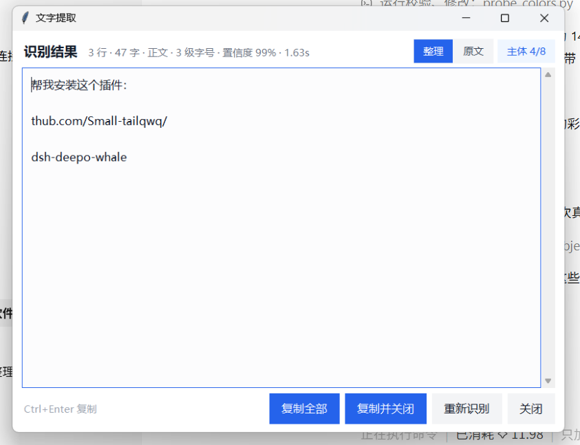
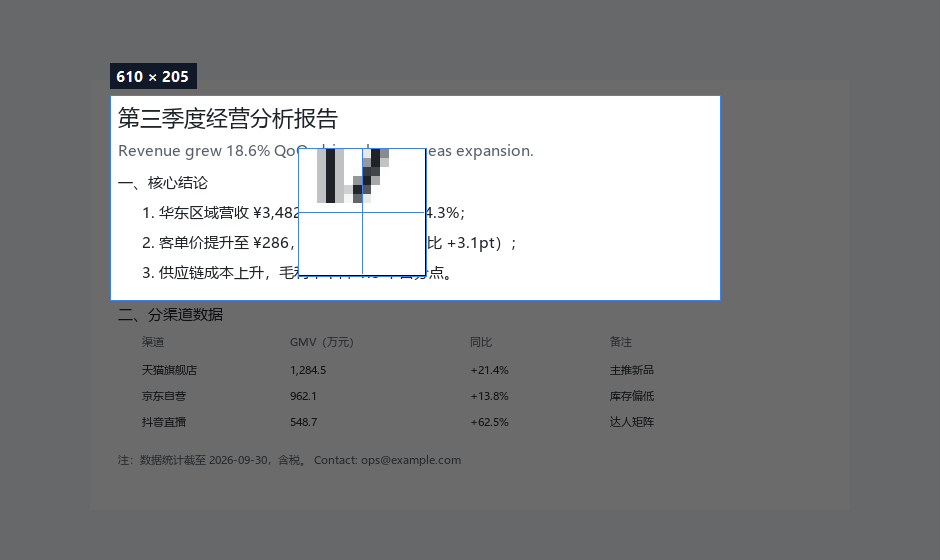
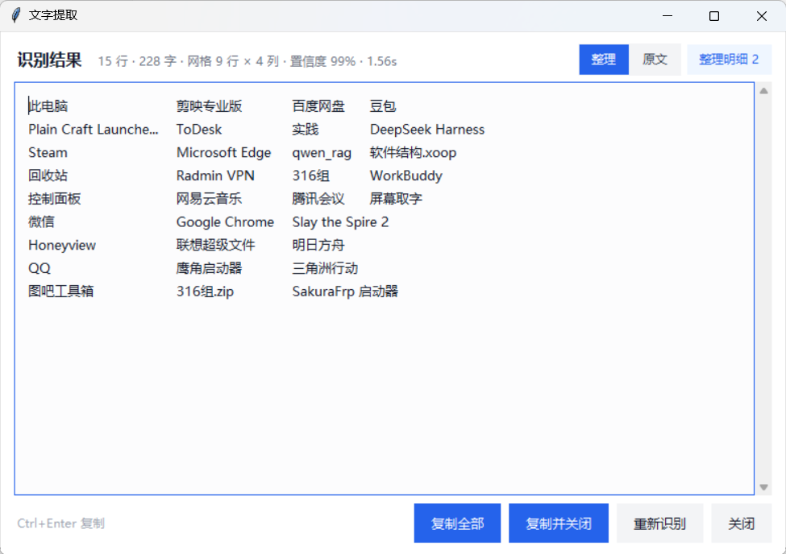

One hotkey, drag a box over a window, a webpage or a PDF. Recognition runs on your machine, the layout is reconstructed, and the layer you actually wanted is separated from the noise behind it. Nothing leaves the computer.

Subject 3/8 in the corner.Grabbing text off the screen is easy. Getting text you can use is not.
A headline sits on a page that has its own body text. Both get recognized and interleaved into one unreadable line.
Tables collapse into a single column, two-column pages read across, headings fuse into the paragraph below.
Paragraphs broken by the window width, stray spaces between CJK characters, half-width punctuation in full-width text.
The same selection, 1.2.0 versus 1.3.0.
github.com/Small-tailqwq/对话用中文展示思考过程轨迹帮我安装这个插件： dsh-deep直接展示后面合温导现能物的是给出结构化的推 o-whale提，判断体据，备选方案为什么选它原始思到全的疑点 反复推翻的中间结论。15:45
帮我安装这个插件：
github.com/Small-tailqwq/
dsh-deep-whale
Four things, each solving a specific failure mode.
Decides which layer is the subject by font size × ink chroma, and drops the background text underneath. The Subject 3/8 button switches back at any time.
Icon grids and parameter tables keep their column positions, aligned with tabs. Multi-column prose is read column by column.
Merges hard wraps, normalizes punctuation, removes noise spaces, re-blocks headings and lists. Every change is counted and sampled.
Ctrl+Alt+Q anywhere, a 9× magnifier while selecting, Ctrl+Alt+D to re-read the last region after the content changes.


Windows 10/11, Python 3.10+ with tkinter, about 300 MB of disk. No GPU.
:: clone, install, run git clone https://github.com/nineone-spirits/textgrabber.git cd textgrabber install.bat :: creates .venv, installs ~110 MB of dependencies run.bat :: a blue OCR pill appears in the corner
Ctrl+Alt+Q and drag a box over any window.Ctrl+Enter. Everything stays on your machine.pip install -e . registers a textgrabber
command, and python -m screengrab works too.
Global hotkeys and screen capture are Win32-specific. macOS and Linux are out of scope for now.
Hardware-accelerated or DRM-protected windows cannot be captured by GDI. Windows Graphics Capture is on the roadmap.
Line breaks, indentation and tab alignment are preserved. Fonts, weights and colours are not, and merged table cells are lost.